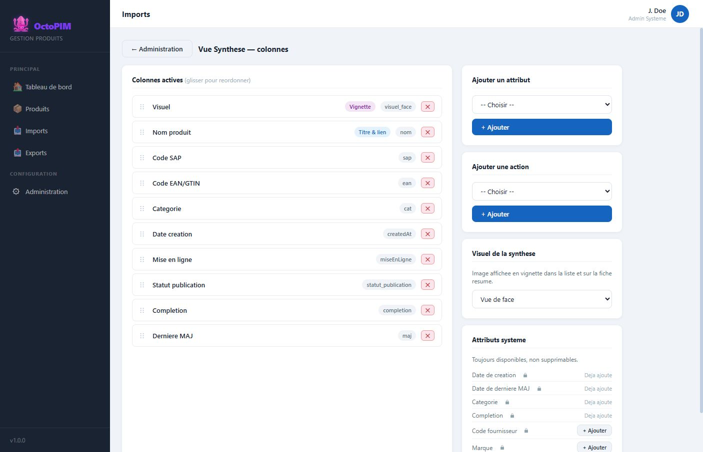

Configuration de la vue de synthese
La vue synthese est la liste « courte » des produits : quelles colonnes, dans quel ordre. Elle est commune a tous les utilisateurs (parametrage admin, pas une pref personnelle).
Qu’est-ce que la vue de synthese ?
Un assemblage de colonnes : attributs (visuel, nom, codes, categorie, dates, statut, completion…) et, en option, des actions (ex. supprimer).

A quoi ça sert ?
- Adapter la liste de travail sans toucher au modele de donnees.
- Mettre en avant ce que l’equipe achat / qualite regarde tous les jours.
- Alimenter l’onglet Synthese de l’export.
Comment ça marche
- On ajoute un attribut existant a la liste, on reordonne, on retire.
- Le nom du produit reste le point d’entree vers la fiche (colonne cliquable).
- La jauge de completion s’affiche a gauche du nom, pas a la place d’une etoile d’obligation.
Regles
RG-SYN-01 — La vue synthese est un parametrage d’application, identique pour tous les roles (les droits filtrent les lignes, pas les colonnes).
RG-SYN-02 — On n’ajoute que des attributs deja definis.
RG-SYN-02 — On n’ajoute que des attributs deja definis.